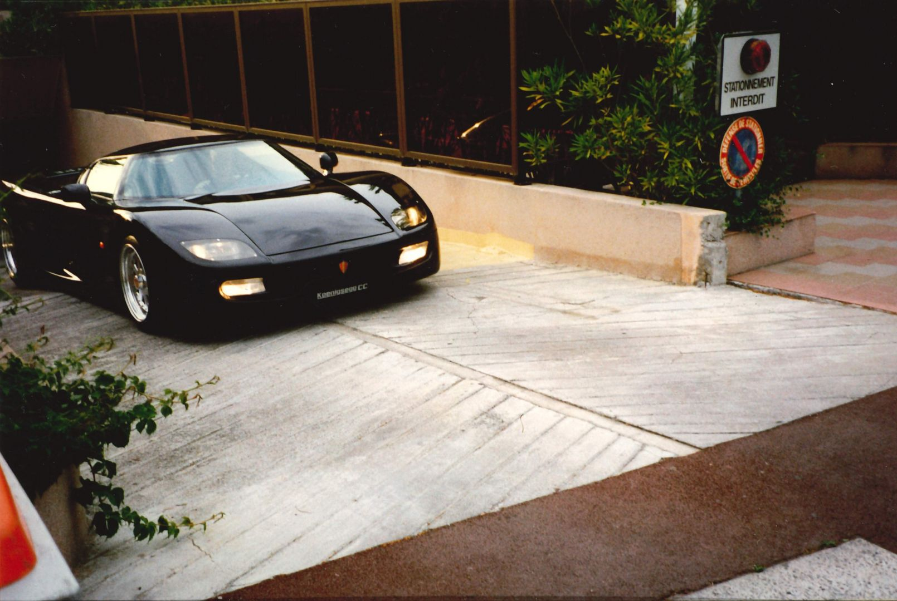
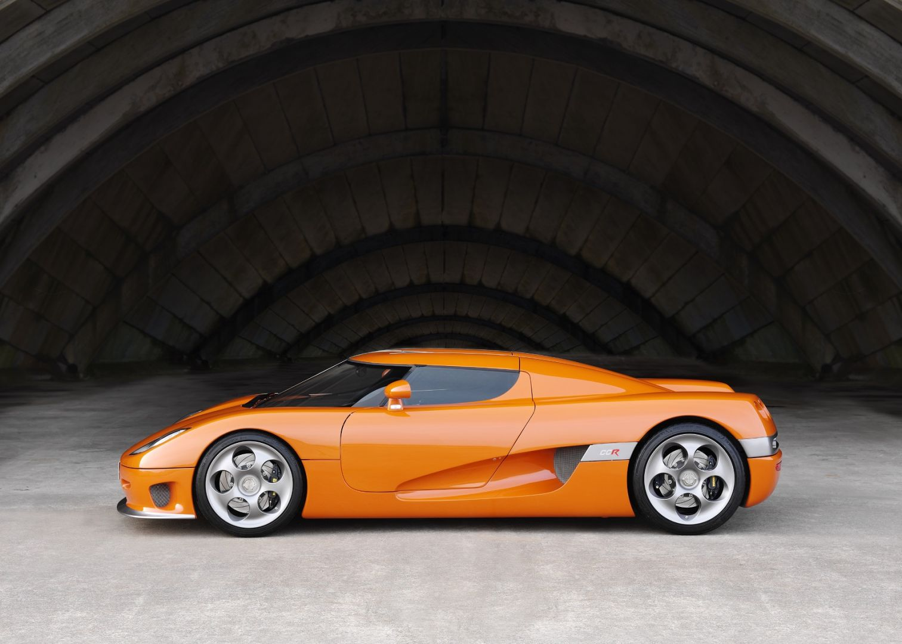
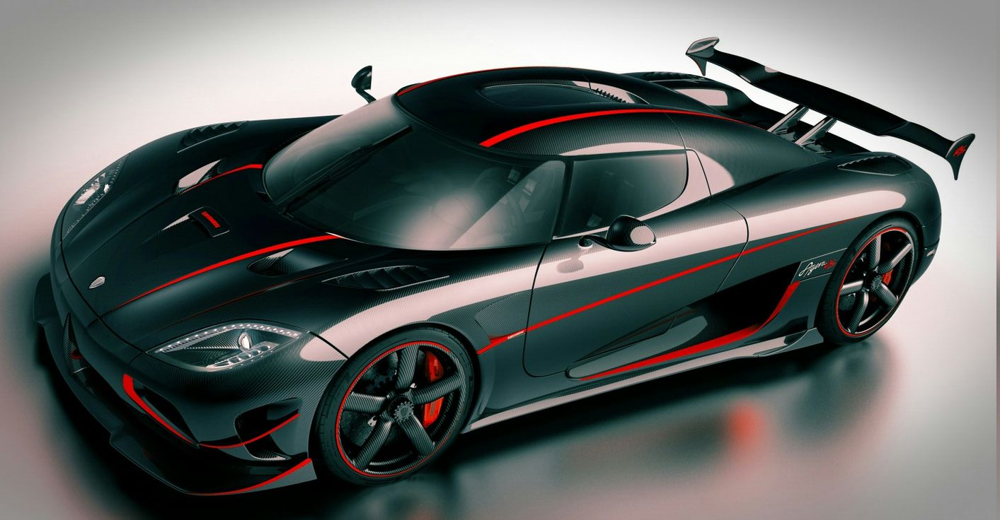
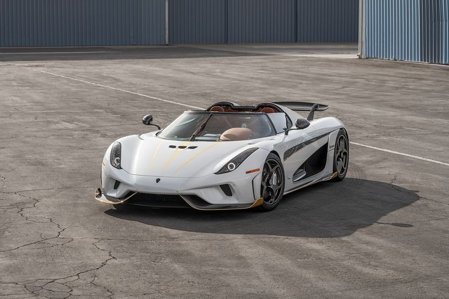
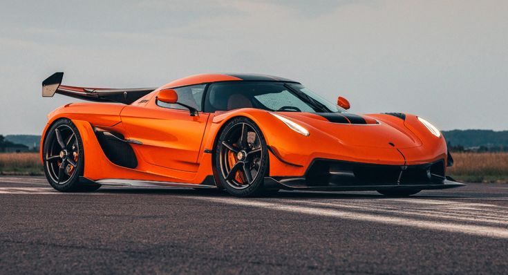
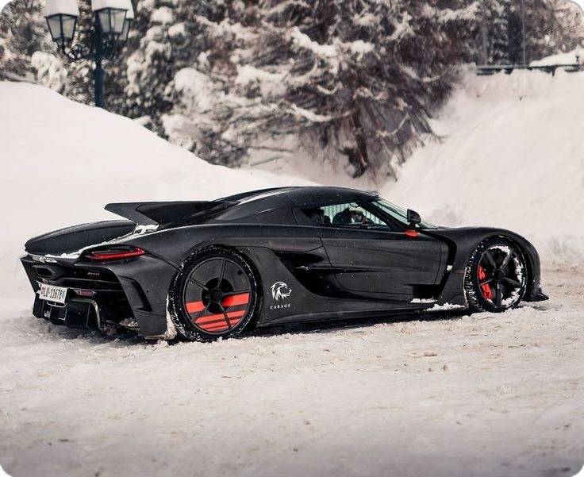
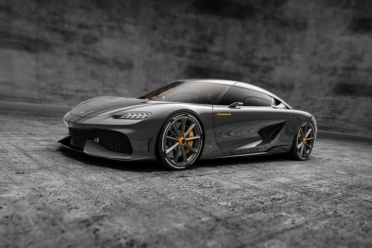
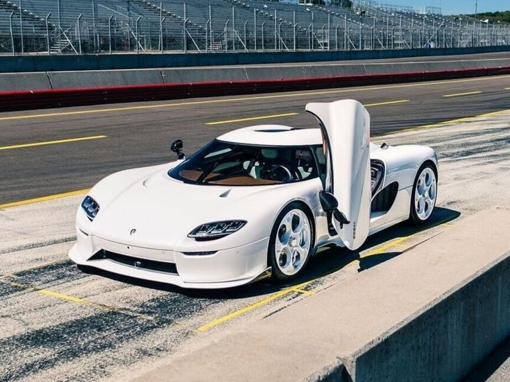

Protótipo Koenigsegg CC (1994)
Koenigsegg CC8S (2002–2003)
Koenigsegg CCR (2004–2006)
Koenigsegg CCX (2006–2010)
Koenigsegg CCGT (2007)
Koenigsegg CCXR (2007–2009)
Koenigsegg Agera (2011)
Koenigsegg Agera R (2011–2014)
Koenigsegg Agera S (2013–2014)
Koenigsegg One:1 (2014–2015)
Koenigsegg Agera RS (2015–2018)
Koenigsegg Regera (2016–2022)
Koenigsegg Jesko (2021)
Koenigsegg Jesko Absolut (2021)
Koenigsegg Gemera (2022)
Koenigsegg CC850 (2023)